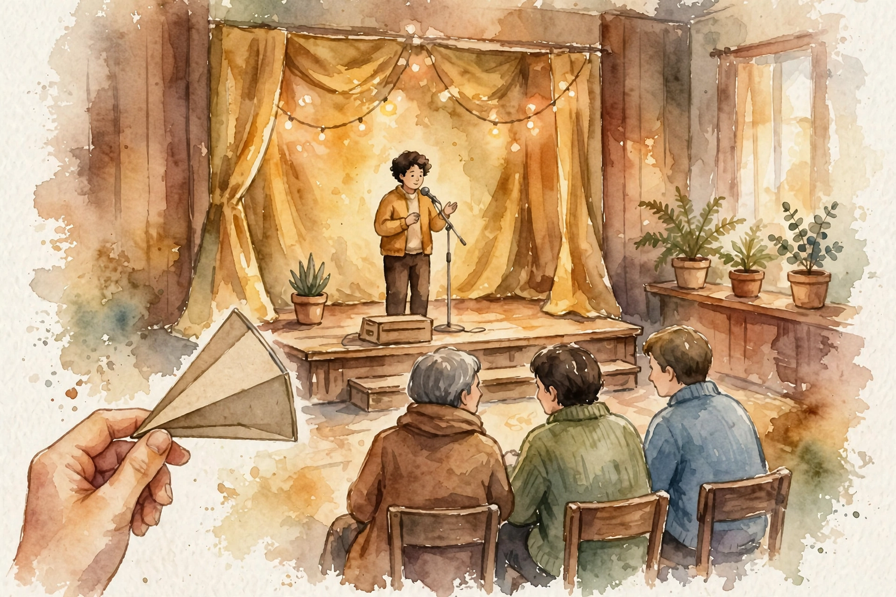

The Knowledge Project · Episode 8 · Companion
Seth Godin
Seth Godin on the creative practice: name the change, meet the spec, serve the smallest viable audience. This companion follows the full episode and pulls out the ideas on process, sunk costs, and professional craft.

Illustration. The smallest viable audience. Delight a few completely and the few will bring the many. AI-generated watercolor made for this page.
Watch. The official episode video. Use the chapter menu above to jump to any section of this companion as you listen.
The Wisdom Index: every nugget in this companion
Part 1
Three Pillars
Godin builds his work on three pillars. First, the change you seek to make. Second, the possibility you see in the world. Third, the emotional labor you agree to do.
Most people start with tactics. He starts with the change. If you cannot name the change, no tactic will save you.
Nugget 1 · Purpose
Name the change first
What happened. Godin frames every project with three questions: what change, what possibility, what emotional labor.
Why it matters. Tactics without a named change produce motion without direction.
The principle. Write down the change you seek before you pick the tools. The tools serve the change, never the reverse.
Part 2
Process and the Spec
Godin borrows a line from Elizabeth King and calls it beautiful:
Process saves us from the poverty of our intentions
Elizabeth King, via Seth Godin, in the episode
Intentions are cheap. A process you follow on the worst day is the real commitment. His process produced seven thousand five hundred blog posts in a row, without missing one.
The spec decides when the work is done. In college he took a logic exam pass-fail, worked three and a half hours, and left, saying he had met his spec. Another student stayed eighteen hours chasing perfection. Godin argues the extra fourteen and a half hours bought almost nothing.
Three and a half hours versus eighteen
Hover any bar for detail.
Source: episode transcript. Godin left the logic exam after 3 and 1/2 hours. Another student stayed 18 hours.
Nugget 2 · Craft
Meet the spec, then stop
What happened. Godin defined his spec for the exam in advance, hit it in three and a half hours, and walked out while others stayed.
Why it matters. Without a spec, done has no definition, so work expands until exhaustion calls it finished.
The principle. Set the spec before you start. When you meet it, stop. Perfection past the spec is procrastination in disguise.
Part 3
Smallest Viable Audience
Godin rejects the biggest possible audience. He serves the smallest viable one: the fewest people you need to make the work matter. Harry Potter, he notes, was written for precocious twelve-year-olds, not for everyone. That focus is why it reached everyone.
His brussels sprouts story makes it concrete. David Chang served them at Momofuku to fifty seats a night, not to the masses. Delight a few completely and the few will bring the many.
Nugget 3 · Marketing
Serve the few completely
What happened. Godin points to Momofuku's fifty seats and Harry Potter's precocious twelve-year-olds as the model: narrow focus, deep delight.
Why it matters. Work for everyone pleases no one. Work for someone specific gives that someone a reason to care.
The principle. Find your smallest viable audience. Earn them fully before you chase anyone else.
Part 4
Sunk Costs and Shame
A sunk cost, Godin says, is a gift from your former self:
gift from your former self
Seth Godin on sunk costs, in the episode
The law degree, the tickets, the misspelled masonry signs, all bought by a past you with past information. The gift deserves thanks, not obedience. You owe your former self gratitude, not loyalty to a bad plan.
He pairs this with shame. His World's Worst Boss work argues that shame at work is a choice the system makes, and a better boss refuses to use it as a tool.
Part 5
The Practice
Godin saw ten thousand talks live and gave a thousand himself. His classic talks run one hundred fifty to one hundred ninety slides in forty-five to fifty minutes. The volume is the point: practice is the only teacher that never lies.
He built the altMBA to teach people to change their minds, and he admires Acton Academy, where fifty kids and two adults run a one-room schoolhouse. Small groups, real work, no hiding.
Ten thousand seen, one thousand given
Hover any bar for detail.
Source: episode transcript. Godin saw 10,000 talks live and gave a thousand.
Part 6
Money and Meaning
Past seventy thousand dollars, Godin says, happiness stops rising with income. The data is plenty, and the billionaires prove the point in the other direction.
He closes with two reframes. First, people do not want what you want, so stop selling your desires and start serving theirs. Second, a professional is not someone who does what they love. A professional is someone who loves what they do. Dolly Parton said it best: find out who you are, then do it on purpose.
Takeaways
- Name the change before the tactics. Three pillars, in order.
- Set the spec in advance. When you meet it, stop.
- Serve the smallest viable audience completely. The few bring the many.
- Treat sunk costs as gifts from your former self. Thank them, then decide fresh.